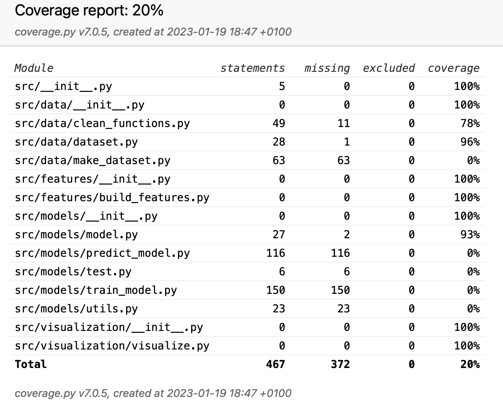
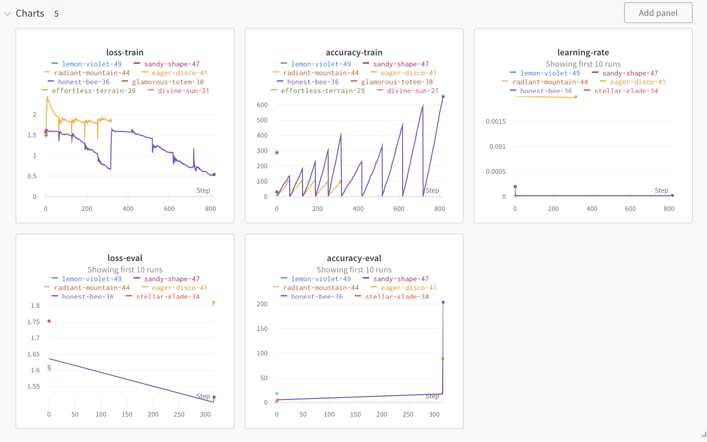
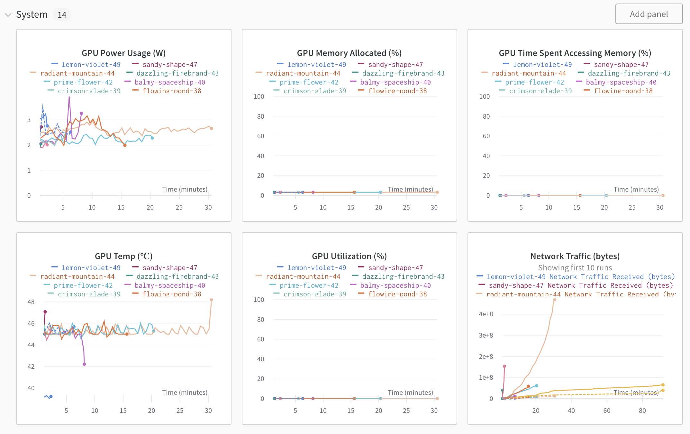
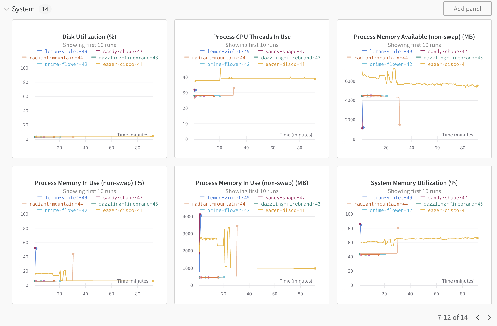
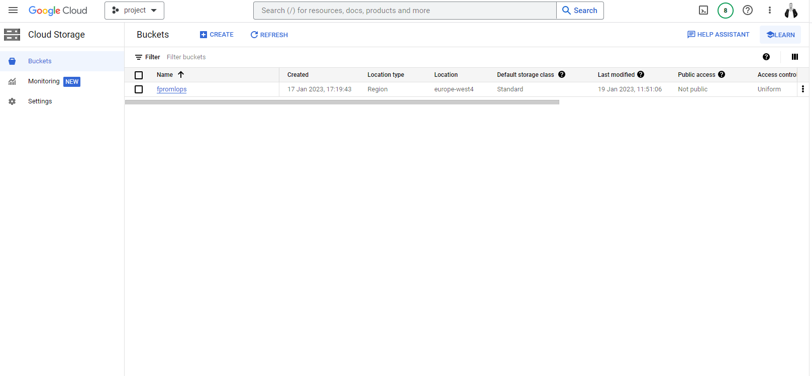
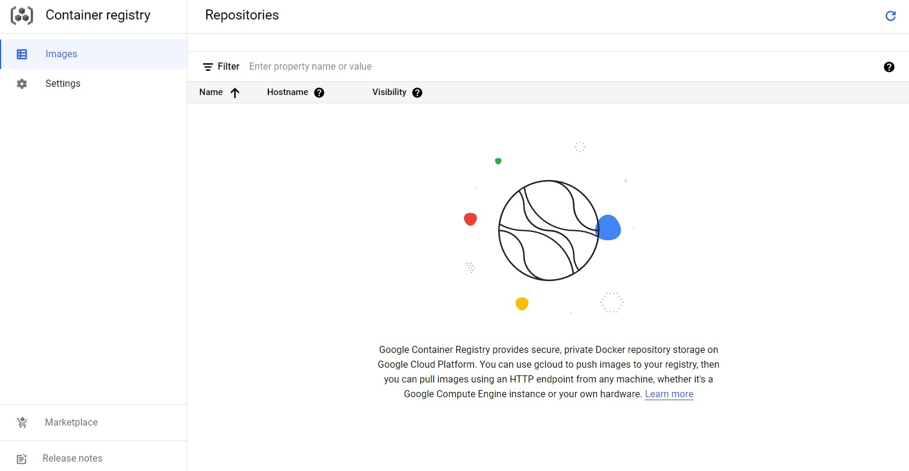
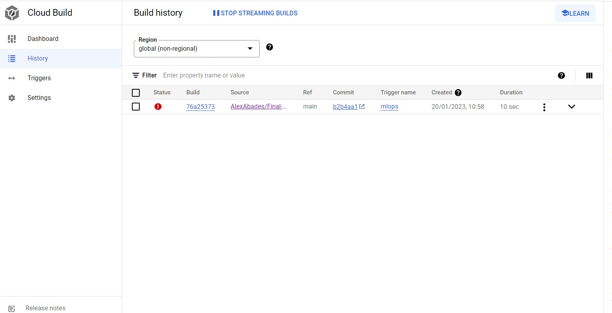
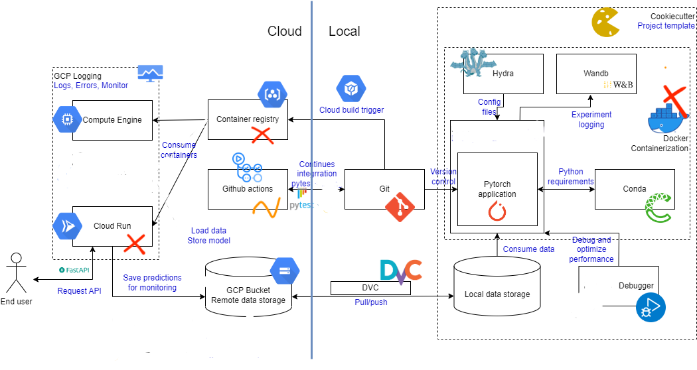

This is the report template for the exam. Please only remove the text formatted as with three dashes in front and behind like:
--- question 1 fill here ---
where you instead should add your answers. Any other changes may have unwanted consequences when your report is auto
generated in the end of the course. For questions where you are asked to include images, start by adding the image to
the figures subfolder (please only use .png, .jpg or .jpeg) and then add the following code in your answer:
markdown

In addition to this markdown file, we also provide the report.py script that provides two utility functions:
Running:
bash
python report.py html
will generate an .html page of your report. After deadline for answering this template, we will autoscrape
everything in this reports folder and then use this utility to generate an .html page that will be your serve
as your final handin.
Running
bash
python report.py check
will check your answers in this template against the constrains listed for each question e.g. is your answer too short, too long, have you included an image when asked to.
For both functions to work it is important that you do not rename anything. The script have two dependencies that can
be installed with pip install click markdown.
The checklist is exhaustic which means that it includes everything that you could possible do on the project in relation the curricilum in this course. Therefore, we do not expect at all that you have checked of all boxes at the end of the project.
make_dataset.py file such that it downloads whatever data you need andrequirements.txt file with whatever dependencies that you are usingpep8) while doing the projectEnter the group number you signed up on
Answer:
Group: Awasome 43
Enter the study number for each member in the group
Example:
sXXXXXX, sXXXXXX, sXXXXXX
Answer:
s212784, s212487, s213237
What framework did you choose to work with and did it help you complete the project?
Answer length: 100-200 words.
Example: We used the third-party framework ... in our project. We used functionality ... and functionality ... from the package to do ... and ... in our project.
Answer:
The Transformers pipeline was used as the project basis while working with NLP to classify the data. However, other frameworks have been used such as PyTorch and the PyTorch Lightning library to be able to provide the necessary tools for building and training the NLP model using the "model" module. We also used the AdamW optimizer from PyTorch for optimization and PyTorch's built-in loss functions for computing the loss, together with scheduler provided by PyTorch for learning rate scheduling. Additionally, we used the hydra library to import the configurations from a yaml file, the transformers library for tokenization, the pandas and NumPy libraries for data manipulation, the wandb library for logging, the sklearn library for metrics, the tqdm library for progress bars, the click library to create a command-line interface, the logging library to log progress, the dotenv library to load environment variables, the pathlib library to work with file paths, the os library to join paths and the torch library for CUDA support. Finally, we used the Natural Language Toolkit (nltk) library which we used in preprocessing functions for text data such as removing emojis, numbers, punctuations, stop words, lower casing, lemmatizing the text and tokenization of text.
In the following section we are interested in learning more about you local development environment.
Explain how you managed dependencies in your project? Explain the process a new team member would have to go through to get an exact copy of your environment.
Answer length: 100-200 words
Example: We used ... for managing our dependencies. The list of dependencies was auto-generated using ... . To get a complete copy of our development enviroment, one would have to run the following commands
Answer:
Some packages were installed using pip (nltk,matplotlib...) while others using conda (torch,torchvision...) The package managers allow easy installation, updating and uninstalling of packages and it helps in resolving dependencies. For that, conda was used as primarily package manager.
To get the list of the packages installed with pip we used: pip list --format=freeze > <pipfileName>.txt
To get the conda list we used: conda list –explicit > <condafileName>.txt
Then we used:cat <condafileName>.txt >> <pipfileName>.txt to join both requirements.
Once we had both requirements in a list we checked for the essential ones, as pip freeze gives all the packages you had installed using pip management.
To reply our environment you can just run the following command once you have installed python and conda.
conda create -n myenv python=3.8.15
conda activate myenv
conda install pip
go to the directory you stored the file <condafileName>.txt
python <condafileName>.txt
We expect that you initialized your project using the cookiecutter template. Explain the overall structure of your code. Did you fill out every folder or only a subset?
Answer length: 100-200 words
Example: From the cookiecutter template we have filled out the ... , ... and ... folder. We have removed the ... folder because we did not use any ... in our project. We have added an ... folder that contains ... for running our experiments. Answer:
The overall structure from cookiecutter used was: .dvc: contain the configuration files for dvc, a version control system .gitignore: git ignore file, used to ignore files and directories that shouldn't be tracked by git LICENSE: license file Makefile: simple way to automate common tasks README.md: contains information about the project requirements.txt: project dependencies data.dvc: data version control file for dvc data/processed/test.pth: processed data files (test set) data/processed/train.pth: processed data files (train set) data/raw/: raw data docs/: documentation files models/: the models and configurations notebooks/: contains the project's notebooks which we didn’t use. outputs.dvc: outputs version control file for dvc predict.dockerfile: a file that contains instructions to build a container image pyproject.toml: a file that contains the project's dependencies references/: project references reports/: project's reports src/: contains the source code for the project which we used src/features: to build the features src/models: to make the train model its prediction, together with the config files for hydra and utils script for useful functions. src/visualitzation: useful images of how our model performs. test_environment.py: a script to test the environment tox.ini: configuration file for Tox, a tool for running tests in multiple Python environments trainer.dockerfile: a file containing instructions to build a container image
Did you implement any rules for code quality and format? Additionally, explain with your own words why these concepts matters in larger projects.
Answer length: 50-100 words.
Answer:
We used Black and isort packages with a default configuration. Some of are: Black: -Use 4 spaces per indentation level. -Limit all lines to a maximum of 79 characters. -Use double quotes, not single quotes, for string literals. -Use spaces around operators and after commas, but not directly inside parentheses or square brackets. -Use empty lines to separate top-level function and class definitions. Isort: -Sorting imports alphabetically and by type (e.g. standard library imports, third-party imports, local imports) -Grouping imports by type (e.g. standard library imports, third-party imports, local imports) -Sorting imports within groups alphabetically.
In the following section we are interested in how version control was used in your project during development to corporate and increase the quality of your code.
How many tests did you implement and what are they testing in your code?
Answer length: 50-100 words.
Example: In total we have implemented X tests. Primarily we are testing ... and ... as these the most critical parts of our application but also ... .
Answer:
We have implemented a total of 3 tests. First one, is primarily testing that training and testing data has the expected shape, and if each datapoint has the expected structure. It also checks that at least 5000 (train) and 500 (test) of each label are included in the data. Second file, tests if the output of the model matches the expected shape, when inputing sample data with the same shape as our data. Finally, last one kind of tests that the main idea behind the training file is done as expected, with sample hyperparameters for learning rate, batch size...
What is the total code coverage (in percentage) of your code? If you code had an code coverage of 100% (or close to), would you still trust it to be error free? Explain you reasoning.
Answer length: 100-200 words.
Example: The total code coverage of code is X%, which includes all our source code. We are far from 100% coverage of our code and even if we were then...*
Answer:
The total code coverage can be seen as a measure of how much of the source code of a program has been executed during testing. For example, if our program has 100 lines of code and 80 of them have been executed during testing, the code coverage would be 80%. In our case, due to a lack of time, we obtained that the total code coverage of our code is of 20% as seen in the picture below, being quite low. We implemented tests to check the initialization of our model, the dataset being used and cleaning functions to preprocess all the tweets before model training. We are aware that we were missing the main part of the testing, being model training and model prediction due to a lack of time.

Did you workflow include using branches and pull requests? If yes, explain how. If not, explain how branches and pull request can help improve version control.
Answer length: 100-200 words.
Example: We made use of both branches and PRs in our project. In our group, each member had an branch that they worked on in addition to the main branch. To merge code we ...
Answer:
Each of the three members has implemented changes in the project while always using a secondary personal branch. Every time a significant change was implemented a pull request to the main branch was created, so each of us could pull the changes from the main branch and work from there again. Still not super familiar with how should be the best approach when using branches, we were at least aware of how important is their usage to prevent messing up with all the code in the main directory.
So far we have just created branches from the main branch, which gives a simple structure, but it could be useful to create sub-branches of the already existing branches when aiming to apply more complex and significant changes from the main branch, that should be divided in different subtasks.
Did you use DVC for managing data in your project? If yes, then how did it improve your project to have version control of your data. If no, explain a case where it would be beneficial to have version control of your data.
Answer length: 100-200 words.
Example: We did make use of DVC in the following way: ... . In the end it helped us in ... for controlling ... part of our pipeline
Answer:
Data version control have been used in the project to track two specific folders: data and output. The first one is where we have stored our raw data and our processed data and the second one was were we have stored the pretrained models, which in some cases were very large. We have linked the dvc with google drive as with GCP cloud storage so in this way we can store our data and models in a centralized location, and it can be easily accessible to our team or collaborator. When using Git and dvc together, the project has improved in several ways: • We have been hable to track the changes in the code, data, models and metrics together, making it easier to understand how the code and data have been changed over time. • Everyone had access to the newest data and models, so everyone could try out the newer versions, making the collaboration much easier. • We could restore not only previous versions of the code but also from data and models. • Some of our models are large. Git doesn’t allow the storage of this large files. DVC makes it’s perfect to allocate this large files.
Discuss you continues integration setup. What kind of CI are you running (unittesting, linting, etc.)? Do you test multiple operating systems, python version etc. Do you make use of caching? Feel free to insert a link to one of your github actions workflow.
Answer length: 200-300 words.
Example: We have organized our CI into 3 separate files: one for doing ..., one for running ... testing and one for running ... . In particular for our ..., we used ... .An example of a triggered workflow can be seen here:
Answer:
So far we just have had time to implement unittesting continuous integration everytime a push was being made to the main repository.
Continuous integration (CI) is the practice of automatically building, testing, and deploying code changes. The goal is to detect and fix errors as early as possible in the development process, so that they can be identified and resolved before they become a major issue.
One common type of CI is unit testing, which is used to test individual units of code to ensure that they are working correctly. This has been done using pytest framework. So far this is the only type of CI that we have had time to implement, everytime a push was made to our main repository.
An example of a triggered worflow can be found here: https://github.com/annarife99/Final-Project-MLOps/actions/runs/3957852424/jobs/6778719385
It can be seen how it passes the Set up job, the Checkout, the Set up Python 3.8 and Install the dependencies, but it fails to run the tests due to some dependencies we have not been able to fix (even though the tests run locally without any problem).
Moreover, CI could be use to also check code for formatting and style errors, or test multiple operating systems and python versions. This would be implemented in later stages with the aim to automate the process of building, testing, and deploying code changes, and costumize it so it suits our specific needs.
In the following section we are interested in learning more about the experimental setup for running your code and especially the reproducibility of your experiments.
How did you configure experiments? Did you make use of config files? Explain with coding examples of how you would run a experiment.
Answer length: 50-100 words.
Example: We used a simple argparser, that worked in the following way: python my_script.py --lr 1e-3 --batch_size 25
Answer:
We have made use of config files, which inside the python script we call them in the following way: @hydra.main(config_path="config", config_name="config.yaml"). Get the hyparameters in the following way: hparams = config.experiment, and call each specific parameter like that: batch_size = hparams["batch_size"]. Therefore, we can just run an experiment specifying in the .yaml file which hyperparameters do we want, and the execute python train_model.py.
Reproducibility of experiments are important. Related to the last question, how did you secure that no information is lost when running experiments and that your experiments are reproducible?
Answer length: 100-200 words.
Example: We made use of config files. Whenever an experiment is run the following happens: ... . To reproduce an experiment one would have to do ...
Answer:
To handle reproducibility of experiments, all the hyperparameters have been defined in the .yaml file. Among all the hyperparameters defined, that allow the user to run the experiment with the exact same configuration, an hyperparameter called seed is defined also as 123.
This parameter is called inside the train_model.py file to be use with torch.manual_seed(hparams["seed"]) function, which sets the seed for the pseudorandom number generator used by the torch library.
This allows to reproduce the same random numbers generated during the training and test phases of a model. This is useful when debugging, comparing different models and ensuring reproducibility of experiments.
Upload 1 to 3 screenshots that show the experiments that you have done in W&B (or another experiment tracking service of your choice). This may include loss graphs, logged images, hyperparameter sweeps etc. You can take inspiration from this figure. Explain what metrics you are tracking and why they are important.
Answer length: 200-300 words + 1 to 3 screenshots.
Example: As seen in the first image when have tracked ... and ... which both inform us about ... in our experiments. As seen in the second image we are also tracking ... and ...
Answer:
When conducting machine learning experiments, it is important to track a variety of metrics in order to evaluate the performance of a model and its computational cost. Some common metrics we decided to track in our model are the following: -Loss-train/Loss-eval: It measures the differnce between the predicted output of a model and the true output. A lower loss indicates a better performing model. -Accuracy-train/Accuracy-eval: It measures the proportion of correct predictions made by a model. A higher accuracy indicates a better performing model. Other measures that could be tracked to monitor the performance of the model such as precision and recall have not been included.
However, we just have implemented the setup. When training the model it automatically uploads the above mentioned metrics in W&B, but the figures included below are not representative of how actually the model would perform when more training time and resources were available.
 As seen in the first image we can track the training and evaluation losses and accuracies through all the steps. In case we had a changing learning rate we could also have tracked that.


In this second and third image, we were able to track the system resources we were using. This could be use to be see if we could optimize the model each time we run the model.
Docker is an important tool for creating containerized applications. Explain how you used docker in your experiments? Include how you would run your docker images and include a link to one of your docker files.
Answer length: 100-200 words.
Example: For our project we developed several images: one for training, inference and deployment. For example to run the training docker image:
docker run trainer:latest lr=1e-3 batch_size=64. Link to docker file:Answer:
Docker has been used to containerize our experiments and ensure reproducibility of results. In the two Dockerfiles created the dependencies and packages required for the experiment were specified.
To run the Docker image, we first built the image using the docker build -f trainer.dockerfile . -t trainer:latest command. With this command, we built an image named "trainer". Next, to start a container from the built image, this command has been used:docker run --name experiment1 trainer:latest.
However, at this point we got some errors since it was not able to find our python files in the following way: from src.data.dataset import create_dataloader indicating that even though we are able to start a container from the built image we fail to train the model due to this dependences we have not been able to solve. But we are aware of how important is to use Docker properly to manage dependencies and environment variables and ensure that the experiments can be easily replicated by others to ensure reproducibility.
When running into bugs while trying to run your experiments, how did you perform debugging? Additionally, did you try to profile your code or do you think it is already perfect?
Answer length: 100-200 words.
Example: Debugging method was dependent on group member. Some just used ... and others used ... . We did a single profiling run of our main code at some point that showed ...
Answer:
We got most of the bugs by using Pycharm debugger and VScode debugger (depending on the member of the group) and a lot of patience. We did not have time to implement profiling, as it took us longer than expected to just make the code work without crashing. But we are aware that our code has important limitations, and among them, it takes quite long to make it run. Thus, with more time we would have implemented profiling to detect where is the bottleneck in our project and start optimizing code from there. Much could be done to improve and go deeper into this part if we had more time and if we did not have as much errors to solve at the beggining of this section.
In the following section we would like to know more about your experience when developing in the cloud.
List all the GCP services that you made use of in your project and shortly explain what each service does?
Answer length: 50-200 words.
Example: We used the following two services: Engine and Bucket. Engine is used for... and Bucket is used for...
Answer:
We have used Google Cloud Buckets and Virtual Machines to improve the performance of our project. Google cloud buckets have allowed us to store and retrieve files such as raw and processed data and pretrained models, whereas Virtual machines have been used to create a virtualized environment and test the inference to our model. Virtual machines allowed also us to run multiple operating systems and applications on the same machine which has improves the collaboration, testing and development of the project. The main idea has been to clone exactly the project environment using the docker images in different computers by multiple users.
The backbone of GCP is the Compute engine. Explained how you made use of this service and what type of VMs you used?
Answer length: 100-200 words.
Example: We used the compute engine to run our ... . We used instances with the following hardware: ... and we started the using a custom container: ...
Answer:
We used the Compute engine of GCP to train our model allowing us to create and run virtual machines on Google's infrastrcutrue as it is a big model with different hyperparameters and different size of dataset. As we could specify our computing needs, so far we have trained the e2-medium machine types which provide 2 vCPUs, which means that it can handle 2 concurrent threads of execution and has 4 GB of memory. These specifications are suitable for moderate CPU and memory workloads and it can be used for web servers, small databases, development environments, and batch processing jobs. It also allows us to easily create and manage virtual machines running Windows or Linux operating systems.
Insert 1-2 images of your GCP bucket, such that we can see what data you have stored in it.
Answer:
 We have created one bucket as our dataset was not to heavy. Ideally we should have created at least 2 buckets, one public and one private, so if someone modifies by error some of the data we will still have our raw data. In this case, as the raw data was prvided from kaggle and it was not heavy we can still download it. Aditionally, we have a copy of our data in google drive.
Upload one image of your GCP container registry, such that we can see the different images that you have stored. You can take inspiration from this figure.
Answer:

Upload one image of your GCP cloud build history, so we can see the history of the images that have been build in your project. You can take inspiration from this figure.
Answer:

Did you manage to deploy your model, either in locally or cloud? If not, describe why. If yes, describe how and preferably how you invoke your deployed service?
Answer length: 100-200 words.
Example: For deployment we wrapped our model into application using ... . We first tried locally serving the model, which worked. Afterwards we deployed it in the cloud, using ... . To invoke the service an user would call
curl -X POST -F "file=@file.json"<weburl>Answer:
To deploy our model we managed to do it locally using FastAPI. Due to the time limitation, we didn't manage to deploy it on the cloud. First, to understand how FastAPI works, a function was built to create configuration files automatically by inserting the parameters as inputs. Afterwards we deployed the model locally by using the functions (already built) to train the model. Again, the parameters were inserted as inputs by interacting with FastAPI. We also deployed the part to make predictions from the model which also turned out to work. To invoke the service the user should first log in and initialize wandb account. Then, this command can be inserted into the terminal: uvicorn --reload --port 8000 main_app:app which will launch an server at this page: http://localhost:8000/. To try out the model, the user can use the page http://localhost:8000/docs. There we can also see the curl command that could be also used. As we weren't able to deploy the model using the cloud services, we could not train the model using a lot of data and epochs, reason why we have obtained low accuracies. However, we expected them to improve if much iterations and training data were used.
Did you manage to implement monitoring of your deployed model? If yes, explain how it works. If not, explain how monitoring would help the longevity of your application.
Answer length: 100-200 words.
Example: We did not manage to implement monitoring. We would like to have monitoring implemented such that over time we could measure ... and ... that would inform us about this ... behaviour of our application.
Answer:
Unluckly, we did not manage to implement monitoring of our deployed model due to a lack of time. However, we did investigate how it would help to improve the longevity of our deployed model. For instance, it can help to identify when its accuracy or performance starts to degrade and can indicate when the performance drops significantly. It can also be useful to detect data drift, seeing different data compared to the one it was trained on. Next, it can be used to idenity and fix errors easily to improve the reliability of the model and the overall performance by optimizing the cost. Overall, it is a crucial step for keeping the health of a deployed model, addressing issues before they become a major problem.
How many credits did you end up using during the project and what service was most expensive?
Answer length: 25-100 words.
Example: Group member 1 used ..., Group member 2 used ..., in total ... credits was spend during development. The service costing the most was ... due to ...
Answer:
We could not take advantage of the credits available since we did not success in running the experiment on the cloud. However, we are aware that the most expensive service when running a model in the GCP is likely to be using a GPU for training. Other potential costs to consider include storage for data and files and network bandwith for data transfer. Additionally, depending on the complexity of the model and the size of dataset, the cost could be affected by the number of CPU and GPU hours required.
In the following section we would like you to think about the general structure of your project.
Include a figure that describes the overall architecture of your system and what services that you make use of. You can take inspiration from this figure. Additionally in your own words, explain the overall steps in figure.
Answer length: 200-400 words
Example:
The starting point of the diagram is our local setup, where we integrated ... and ... and ... into our code. Whenever we commit code and puch to github, it auto triggers ... and ... . From there the diagram shows ...
Answer:

The MLOps pipeline followed in this project consists on a set of processes and tools that are used to build, test, deploy, and monitor a machine learning model in a production environment. The pipeline typically includes several key components, including data storage, model training and evaluation, experiment tracking, and deployment. The pipeline starts with data storage, where the data is stored either locally or remotely. In our example, GCP Bucket has been used for remote data storage, and DVC to version and manage the data. This allows for easy access to the data for all pipeline stages, and also allows for the data to be easily versioned and tracked. Next, the pipeline moves to the model training and evaluation stage, where the data has been used to train and evaluate our Natural Language Processing machine learning model based on transformers. Requirements have been managed using conda and PyTorch has been used as the machine learning framework. Hydra has been used to manage the configuration of the pipeline. In this way, we achieve a flexible way to manage the process, allowing for easy experimentation and modification. Experiment tracking is also an important part of any MLOps pipeline. To achieve so, we have used Weights & Biases (W&B) to track and analyze the results of different runs. W&B allows for easy logging of metrics, model artifacts, and input/output data, and provides a web-based interface for visualizing and comparing the results of different runs. Once the model is trained and evaluated, it needs to be deployed to a production environment. In this example, Git and Github Actions are used for version control and automated pipeline management. However, only unit testing has been implemented, and once added as a Github Action, it gives errors.
Then the pipeline should be deployed to GCP Compute Engine and Cloud run, wrapping the model in a container using container registry, which allows for easy scaling and management. However, even though we kind of have built the overall setup we have fail ed to implement that properly. GCP logging should be used to track the performance of the deployed model and to detect and diagnose any issues that may arise. Finally, FastAPI would be used as the web framework to serve the model to the end user. In our case, as we did not suceed in deploying the model in the cloud, FastAPI is just working locally.
Discuss the overall struggles of the project. Where did you spend most time and what did you do to overcome these challenges?
Answer length: 200-400 words.
Example: The biggest challenges in the project was using ... tool to do ... . The reason for this was ...
Answer:
The primary challenge in this project has been the newness of the material covered in the course. Despite this, we believe that the concepts and techniques learned will be highly beneficial for future projects and work tasks. In particular, one of the most challenging aspects was implementing the model itself. In retrospect, it may probably had been more advantageous to select a simpler model and devote more attention to the overall Machine Learning Operations pipeline.
Additional difficulties were encountered in managing dependencies and requirements files, such as issues encountered when creating Docker images using the standard requirements.txt file. To address this, a separate requirements_docker.txt file was created.
Furthermore, there were also difficulties encountered in utilizing data version control to manage all the data, particularly the results obtained from training the model.
Overall, while each component of the pipeline presented its own limitations, we prioritized making the system work as a whole rather than focusing on perfecting one specific aspect. And even though there are still a lot of errors, this has provided us with a comprehensive understanding of the architecture of a Machine Learning Operations system, ensuring that we will not be starting from scratch when addressing all the limitations encountered in future.
State the individual contributions of each team member. This is required information from DTU, because we need to make sure all members contributed actively to the project
Answer length: 50-200 words.
Example: Student sXXXXXX was in charge of developing of setting up the initial cookie cutter project and developing of the docker containers for training our applications. Student sXXXXXX was in charge of training our models in the cloud and deploying them afterwards. All members contributed to code by...
Answer:
Student s213237 has been in charge of the data analysis and implementation of the model itself, with the creation of hydra files. Also it has created docker files and implemented Continuous Integration unit testing. Student s212487 has been working with the prepartion of the dataset (building the raw and processed data) and helping with the model implementation and its prediction together with the experiment logging. Also, the student was in charge of model deployment using FastAPI. Student s212784 has been working with the project initialization, making sure all the requirements were met, with the data version controls and docker files and working with the cloud setup and computing. All members contributed really active on all the tasks, working together with the conda environment, code structure and project initialization and git management. Team work was easily distributed and discussed and all challenges were solved joinly.
{kind=link}
{kind=link}
{kind=link}
{kind=link}